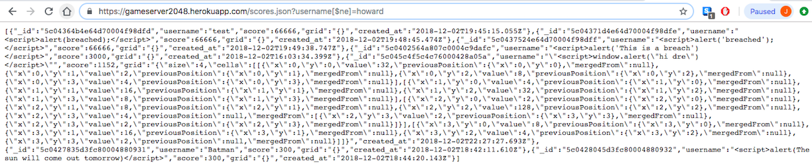

Security Review
By Jason Payne
Introduction
This document is a web security review for the 2048 Game Server app
created by Ming Chow. The app, hosted on heroku at
"https://gameserver2048.herokuapp.com/", displays scores for the popular
game app 2048. It can also call up JSON data given a specific username.
In this report, I will be exploiting and reviewing the security and privacy
issues that exist in the app.
Methodology
To go about testing, my main methods were using query strings and using
curl to send data to the server. In terms of query strings, I simply
changed different variables and values in the query string based on the
results I wanted with operators. For curl, I sent in data that may have
been invalid through the 2048 game, such as high scores, empty grids, and
unrestrained usernames. Additionally, I also used a shell script to create
an infinite loop of requests to the server, though the loop did not run
for long.
Abstract of Findings
Overall, I identified three major security and privacy errors in the
application: first, the client can input new JavaScript into the app,
allowing them to manipulate the page in a near infinite number of ways.
Second, the client can manipulate input data such that they can access
the raw data of every single username without even needing to know them.
Finally, there is no restriction to the number of input requests that can
be sent from a single user at once, meaning that the client can overload
the database and stop any further input.
Issues Found
Issue 1: Cross-Site Scripting in Username Input
- Issue: The client can input a JavaScript
string into the "username" field. As a result, the client can create
instances of Cross-Site Scripting (XSS), allowing them to do just about
anything on the app. To show this weakness, I merely created an alert
box to show the problem, but there are far more dangerous applications,
if the problem is unchecked.
- Location: This issue exists in the
username aspect of the data, meaning that it effects the GET "/"
page. The origin of this problem can originate from either curl or
the 2048 game page.
- Severity: High Severity. This issue
allows the client to control almost anything about the webpage, as
JavaScript can control any HTML or the data.
- Description: This XSS vulnerability, as
stated above, allows the client to insert JavaScript into the page,
letting them do almost whatever they want. Suspected the error when I
saw that there were no tests to the input that I could funnel into the
database. When I tested the alert, as shown below, I knew that XSS was
a major flaw in the security of the application.
- Proof of Vulnerability:


- Resolution: To solve this problem, you
can simply strip all special characters from the username after it is
inserted. A single line of JavaScript in the /submit can fix this:
'username:'username.replace(/[^\w\s]/gi, '')
Issue 2: Access to All Data
- Issue: By adding a modifier to the query
string in scores.json, the client can access all data in the database,
regardless of their own username. This is accomplished through adding
"[$ne]" in the query string, leading to the database returning all data
that is not equal to the given username. This is a major breach of
privacy.
- Location: This problem is located in
the GET "/scores.json" path. Specifically, it occurs in the query
string portion of the function, when the query string is passed
to the database without being checked at all.
- Severity: Medium severity. While this is
not necessarily dangerous in this application, due to most of the data
already being public on the main page, this issue still causes a major
privacy breach, as anyone can access any data.
- Description: As stated above, this
issue occurs when someone adds a MongoDB search modifier to the query
string, specifically the [$ne] operator. I found this issue when I
realized that there was parsing of the query string before it was sent
to search the database. My test is shown below, where I found a username
with no data corresponding to it, and revealed all stored data by using
the mentioned operator.
- Proof of Vulnerability:

- Resolution: This problem can be solved
through a number of different ways, though one rather simple one is
authenification. By creating a password or other form of
authenification for each username, the client can still access their
data while still maintaining their privacy.
Issue 3: Infinite Requests
- Issue: There is no limit to the number
of input requests a single person can send to the server in a given
amount of time, allowing someone to send an unlimited number of
requests. While the server will most likely be able to handle this,
MongoDB eventually has a limit to the amount of data it can hold in
a single database. This means that until the database is cleared, it
will not accept any new data, and it is likely that valuable data could
be stored in the deleted data, causing problems for normal clients.
- Location: This issue exists in the
post path, though its results can be seen in either of the get paths.
Eventually, it will cause the database to no longer accept new data
from the post /submit path.
- Severity: Low severity. While this issue
is irritating and inconvient most of the time, it can be easily fixed
after the fact and, if handled properly, will likely not result in any
breaches of privacy or integrity.
- Description: As previously mentioned,
this error occurs when someone runs an (or several) infinite loop(s)
sending data to the server. I found this issue when automating my
testing, resulting in my realization that there was nothing stopping
me from overloading the database. As pictured below, I wrote an infinite
loop in shell script, and ran it for a short time to test that it
worked. In the interest of time and redundency, I did not run the loop
long enough to fill the database.
- Proof of Vulnerability:

- Resolution: To resolve this issue, you
can limit the number of requests sent in by a single person. The
simplest way to do this is likely to limit the number of entries from
a single username, or to create authentification that is necessary to
send requests, resulting in a limited number of requests per person.
Conclusion
As mentioned in each section, all of the exposed problems have
relatively simple fixes in this application that are outlined above.
In the future, it would be wise to never trust anything the client can
send, whether it be curled, unlimited strings, query strings, or the sheer
number of requests a client can send. By restricting client manuverability,
the integrity and privacy of the website or app can be greatly improved.
References
- Here is where I got the code for string special character removal:
https://stackoverflow.com/questions/4374822/remove-all-special-characters-with-regexp
- I used this page to create the infinite loop that was pictured:
https://www.cyberciti.biz/faq/bash-infinite-loop/